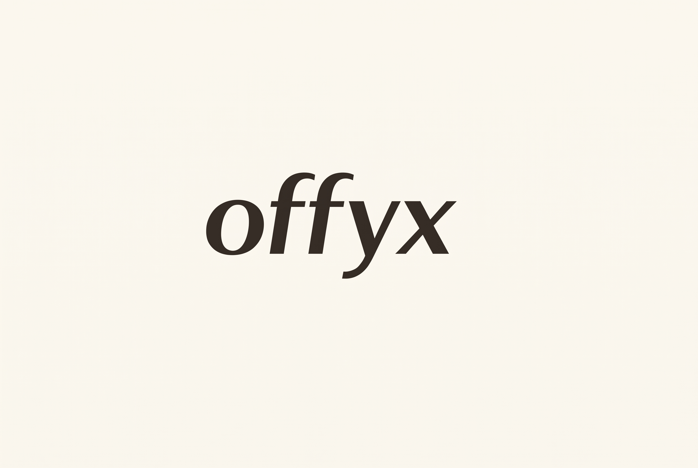
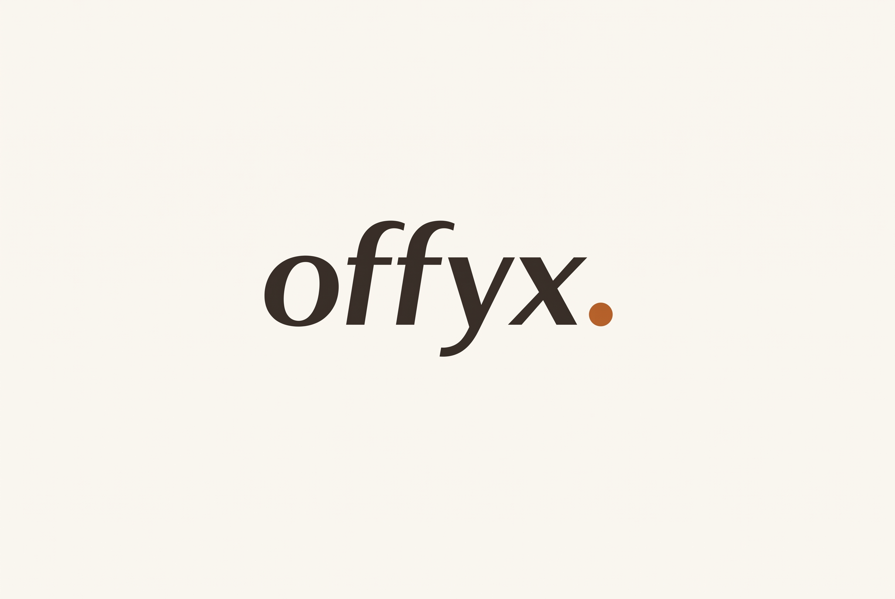
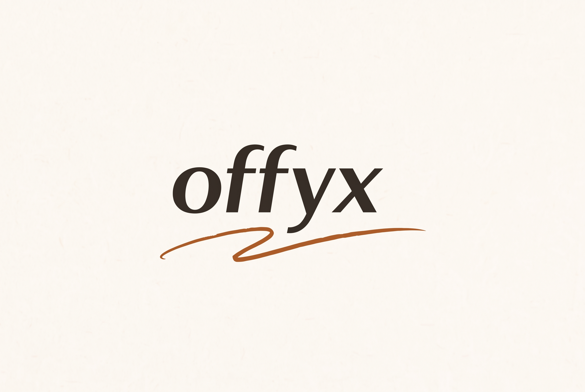
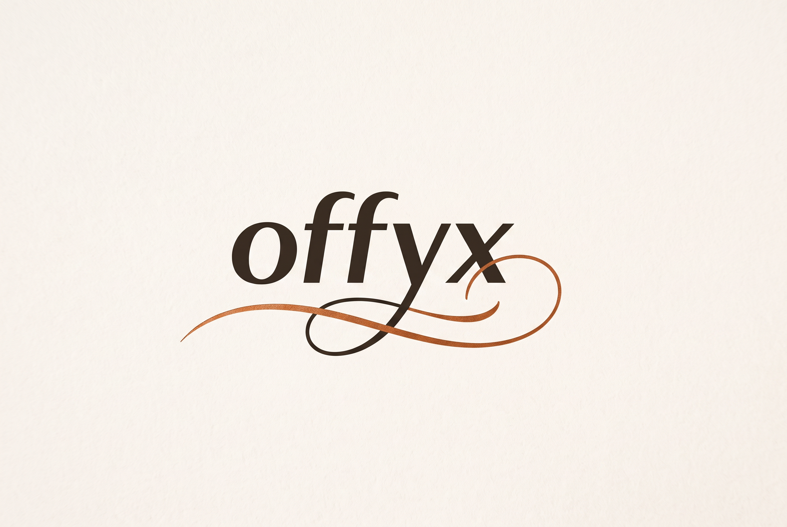

Workflow: Das Referenzbild (kursives „offyx" in Petrol) wurde als Input an
Nano Banana 2 gegeben — mit der Anweisung, es in die offyx-CI zu übersetzen:
Ink #352E28 · Copper #B5632A · Cream #FBF7F1.
Alle PNGs in 2K-Auflösung (2528×1696).
Die 4 KI-Entwürfe

AI · 01
Der Recolor
Die Referenz 1:1 in die CI übersetzt — warmes Ink-Braun statt Petrol auf Cream. Beweist: Die Farbwelt allein verändert die Wirkung komplett. Von kühl-maritim zu warm-editorial.
nb2-01-recolor.png · 2528×1696

AI · 02
Der Copper-Punkt
Ein einziger Copper-Punkt nach dem x — „offyx." wie ein beendeter Satz. Minimaler Akzent, maximale Wiedererkennung. Der Punkt kann eigenständig als Favicon/App-Icon leben.
nb2-02-copper-dot.png · 2528×1696

AI · 03
Die Signatur
Handgezeichneter Copper-Schwung unter dem Wort — organisch, geschwungen, mit Schwung unter dem f. Wie eine Unterschrift unter einem Brief: persönlich, verbindlich, menschlich.
nb2-03-signature.png · 2528×1696

AI · 04
Der Descender-Flourish
Die y-Unterlänge wächst zur kalligrafischen Copper-Linie, die das ganze Wort unterstreicht und in einer Schleife ausläuft. Das aufwendigste, aber auch charaktervollste Stück — der Buchstabe wird selbst zur Dekoration.